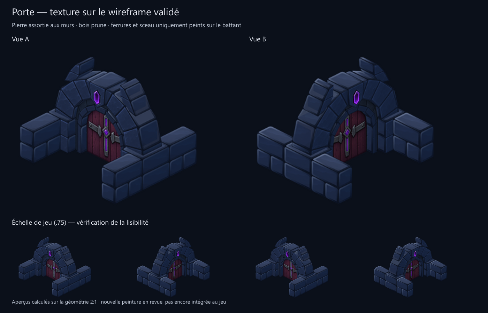
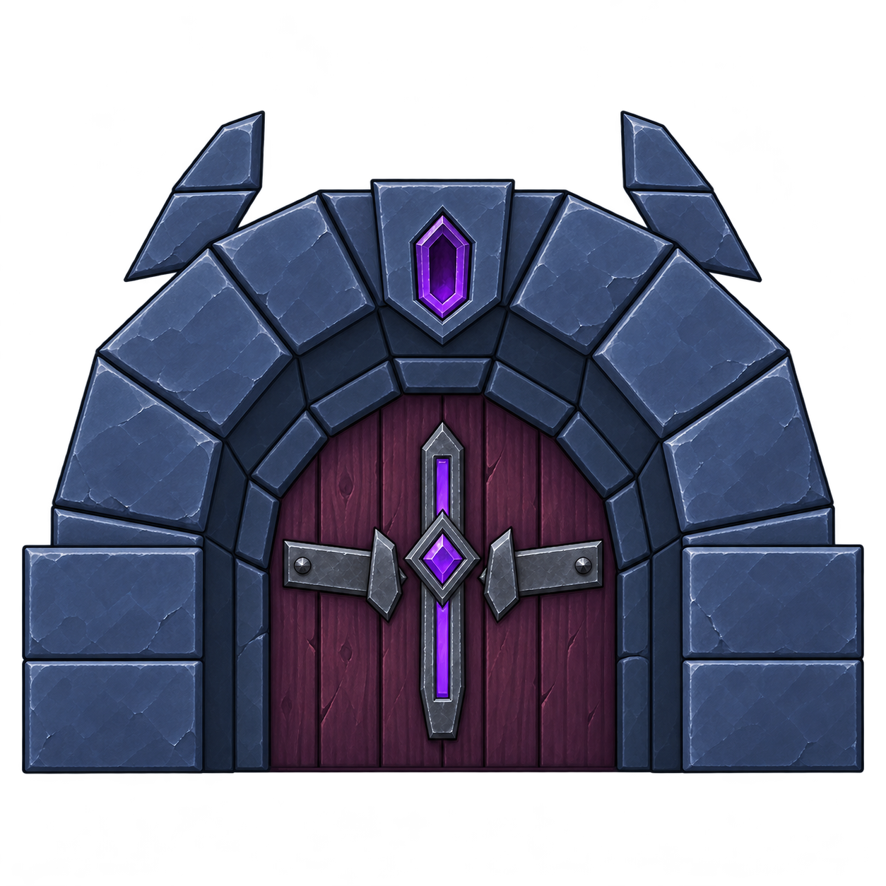

Texture de la porte
Peinture créée à partir du guide magenta validé. Les détails du battant sont dans l’image ; sa géométrie reste lisse. Les pieds rejoignent les murs sur leurs joints. Ces aperçus utilisent la projection exacte du kit et le matériau de pierre des murs pour les côtés et dessus.

Peinture source et guide
Source ImageGen originale, conservée avec sa transparence. La pierre de l’aperçu est ajustée à la palette des murs ; la peinture n’a pas encore remplacé les sprites du jeu.


Prompt ImageGen · Préparation et limites · Sources conservées